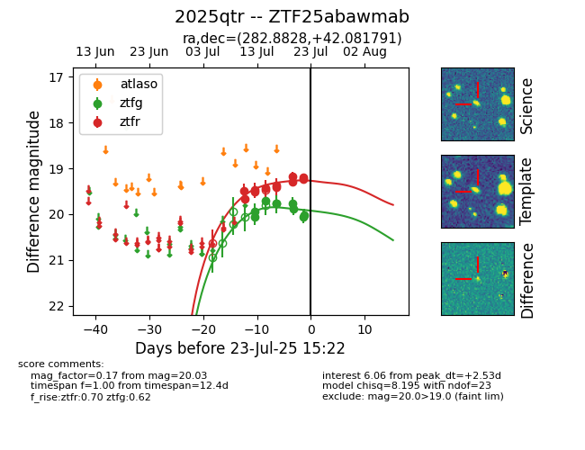

Target ZTF25abawmab at 2025-07-23 15:22, see:
FINK: fink-portal.org/ZTF25abawmab
Lasair: lasair-ztf.lsst.ac.uk/objects/ZTF25abawmab
ALeRCE: alerce.online/object/ZTF25abawmab
TNS: wis-tns.org/object/2025qtr
YSE: ziggy.ucolick.org/yse/transient_detail/2025qtr
alt names
ZTF25abawmab (ztf,fink)
2025qtr (tns,yse)
coordinates:
equatorial (ra, dec) = (282.8828,+42.08179)
galactic (l, b) = (71.7256,+17.77789)
photometry
last ztfg=20.03, ztfr=19.20
9 ztfg, 11 ztfr detections
